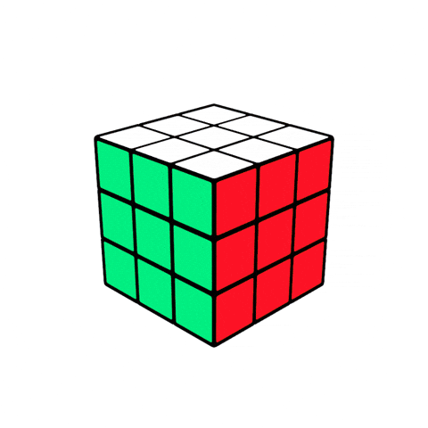
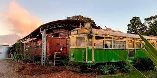
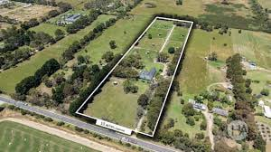

Timeline
Phase 1
Establishing the Homeschooling Co-op (Months 1-6)

Community Formation:
- Recruit families aligned with Consensus21’s decentralised and self-directed learning philosophy.
- Pilot at Peninsula Campus: Test schedules, learning methodologies, and Bitcoin-based education tools.
Curriculum Development:
- Design a unique Consensus21 curriculum incorporating Bitcoin, decentralised learning, and project-based education.
- Identify potential areas of overlap with Steiner education (e.g., nature-based learning, arts, and holistic child development).
Legal & Compliance:
- Ensure compliance with homeschooling regulations.
- Infrastructure & Donations: Secure Bitcoin-based hardware to support the learning model.
Expanding to a Co-Learning Space (Months 6-12)

Transition from Homeschooling to Co-Learning Hub
- Move to a larger shared space before the farm’s development.
Governance & Funding
- Develop decentralised governance structures for Consensus21.
- Seek funding and Bitcoin-based sponsorships.
Community Growth & External Partnerships
- Establish connections with other alternative education initiatives.
Steiner School Planning
- Work with a separate group that will establish the Steiner school, ensuring alignment on shared spaces and curriculum synergy.
Phase 2
Phase 3
Land Acquisition & School Development (Months 12-18)

Land Acquisition
- Secure a 10-acre farm for the permanent co-located schools.
Infrastructure Planning
- Consensus21 and the Steiner school design their respective learning spaces.
Identify shared areas such as gardens, libraries, and maker spaces.
Sustainability & Agriculture
- Launch regenerative farming projects that serve both communities.
Steiner School Registration
- Support the independent Steiner school group in obtaining legal accreditation.
Transition to Full-Time Learning
Expand Consensus21’s schedule to a full-time learning model with educators and facilitators.
Migration & Full Operational Launch (Months 18-24)

Final Setup & Transition
- Move Consensus21’s co-learning space to the farm while ensuring operational independence from the Steiner school.
Curriculum Synergy
- Implement shared programmes in areas like nature studies, artistic expression, and self-directed learning.
Community Engagement
- Organise shared events, workshops, and learning experiences between the two institutions.
- Encourage cross-enrolment in select subjects where appropriate.
Sustainability & Growth
- Establish long-term self-sustaining models through farm projects, Bitcoin donations, and decentralised governance.
Phase 4